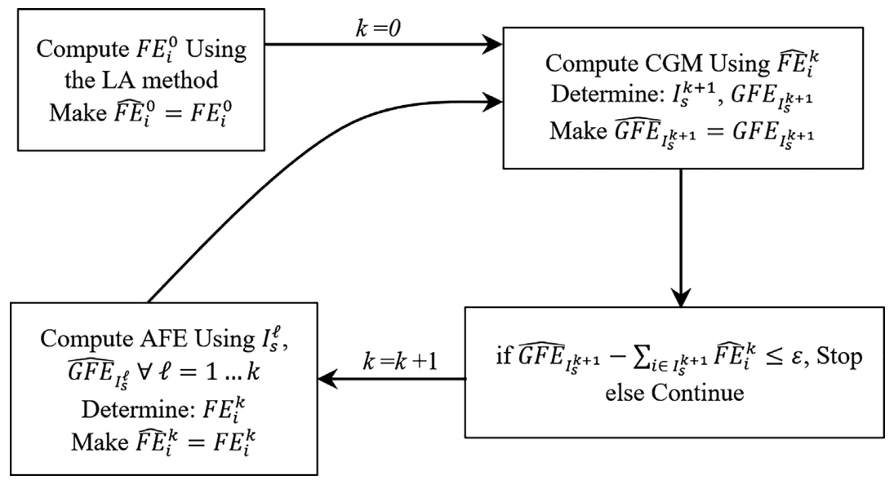

Cooperative game theory for firm energy rights
Hydropower plants can produce more dependable energy when reservoirs operate together. Sharing that benefit is a separate problem: how should energy rights be allocated so that groups of plants have an incentive to remain in the coordinated system? The answer also affects incentives to invest in new plants and storage reservoirs.
Balancing investment incentives and cooperation
The starting point is the last-addition allocation: each plant receives a share based on how much it adds to the system’s firm energy. This recognizes contributions such as upstream water storage, but it does not always give every group of plants as much as that group could obtain by operating alone.
The proposed algorithm repeatedly finds the group with the largest allocation shortfall and adds a constraint protecting that group. It then adjusts the allocation while staying as close as possible to the last-addition shares. The stopping rule limits the remaining shortfall; an exact allocation in the cooperative game’s core would require a zero tolerance.

Checking coalitions and adjusting allocations. Figure 1 from Faria et al. (2018). The coalition-checking model (CGM) identifies the most under-allocated group. The allocation model (AFE) revises the shares to respect the constraints found so far, and the cycle repeats.
The allocation rule and the meaning of the core
Let \(N\) be all plants, \(S\) a group of plants, \(v(S)\) the firm energy that group can produce on its own, and \(x_i\) the allocation to plant \(i\). An exact core allocation satisfies two conditions:
The first distributes the full system benefit. The second ensures that no group receives less than it could produce independently. Among the allocations satisfying the constraints found so far, the algorithm minimizes the sum of squared proportional changes from the last-addition shares. Using proportional changes prevents large plants from dominating the adjustment solely because of their size.
In the experiments, the algorithm stops when the largest remaining coalition shortfall is below \(\varepsilon = 0.001\,v(N)\). This is a tolerance of 0.1% of total system firm energy, not 0.1% of each plant’s share. Exact core membership would require zero tolerance. See Equations (13) and (20)–(22) of the paper.

Scaling the optimization to the national system
A reformulation of reservoir water balances accelerates the search for dissatisfied coalitions. The parallel representation uses natural inflows and accounts for upstream storage changes, while preserving the modeled problem. It is much faster than the conventional series representation in the tested cases.
Selected benchmarks from Table 1 of the paper:
Hydropower plants |
Series CPU time (s) |
Parallel CPU time (s) |
Coalition constraints added |
|---|---|---|---|
20 |
115.4 |
9.6 |
2 |
40 |
70,255.5 |
423.5 |
3 |
170 |
Out of memory |
264,756.9 |
21 |
For 40 plants, the reformulation cuts reported CPU time by more than 150 times. For 170 plants, the series model ran out of memory before finding its first coalition constraint, while the parallel version completed the allocation. All numeric timings in the table are CPU seconds; the paper separately reports approximately 10 hours of elapsed wall-clock time for the 170-plant run.
The study also tested Benders decomposition and acceleration techniques. The enhancements improved that approach, but solving the mixed-integer model directly was generally faster in the reported experiments.